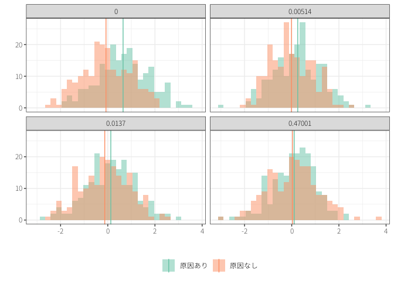
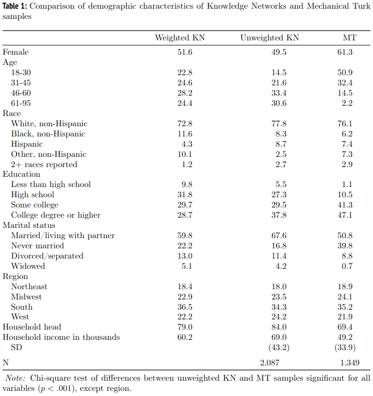

政策効果の検証：基礎
技術政策学（データ科学編）
はじめに
近年、証拠に基づく政策立案 (evidence-based policy making: EBPM) の重要性が主張されている。
- 行政官の経験や勘に頼らない意思決定
- policy-based evidence makingの回避
- Google Trendsの傾向
\(\leadsto\)証拠とはなにか？
- 政策の効果：ある政策によってどの程度、目標のアウトカムは変化したのか？
- 政策効果と政策評価とは似て非なるもの。
- 政策評価：目標をどの程度、実現したのか？
- 例：訪日観光客\(n\)万人という目標の実現と、観光政策によって訪日観光客がどの程度増えたのかは別
- ロジックモデル：政策資源の投入から政策成果までの論理的繋がりを可視化し、KPIを定めたもの。
- あくまで、論理を可視化するもので、それ自体が証拠ではない。
\(\leadsto\)この授業では証拠＝政策効果として議論する。
警告
講師は政策評価の専門家ではないので、他の授業（例えば、政策評価論や行政学系のもの）では異なる説明があると思われる。どちらが正しいというものではないことに留意。
- 統計的因果推論の例
- 統計的因果推論 (statistical causal inference)：原因と結果の関係（効果）を統計的に分析する
- マーケティングなどでも役に立つ
- 事例研究をするときにも（データを使わなくても）役に立つ（かも）
1 交絡
1.1 ワクチンの効果
データ＝証拠ではない！
ワクチン接種者の方が重症者 (sever cases) が多い？
\(67.5%\)の人はワクチンを打っていれば重症化しなかった？
- 有効性：\((16.4 - 5.3)/16.4 \approx 67.5\%\)
世代で分けると有効性が変わる？
ワクチンを接種するかどうかは（パンデミック初期は）重症化のしやすさに影響を受けていた。
\(\leadsto\)原因（政策）の有無で結果の違いが生じていても、効果とは言えない！
1.2 交絡
なぜ、単純な比較をするだけでは正しく効果を計算できなかったのか？
交絡 (confounding)：原因と関係し、結果にも影響するような第三の要因がある状況
- そのような要因を交絡因子 (confounder) や共変量 (covariate) と呼ぶ。

- 原因→結果の関係を知りたいけれど、原因↔︎交絡因子→結果の関係（バックドアパス）があるので、正確に分析できない。
- 因果関係ではないけれど相関関係が生じていることを見かけの相関 (spurious correlation) と呼ぶ。1
- 相関関係は因果関係の前提と言われることがあるが、そうではない点に注意。
1 本来は無関係なものが相関している状況を指していた。
どのような交絡の例があるだろうか？
\(\leadsto\)交絡を取り除かない限り、データから効果を示すことはできない。
- 事例分析をする際も同様
- ある政策を行った自治体とそうではない自治体
- ある自治体がある政策を行う前と後
2 ランダム化比較試験
理想：全く同じ人がワクチンを受けた場合と受けなかった場合に重症化するかどうかを比較する。
\(\leadsto\)不可能
現実：同じような集団がワクチンを受けた場合と受けなかった場合に重症化するかどうかを比較する。
\(\leadsto\)どのようにして「同じような集団」を作るのか？
シンプルかつ強力な方法としてのランダム化比較試験 (randomized controlled trial: RCT)
- RCT：対象をランダムに分割して、一方には原因を与え、他方には原因を与えず、集団の結果を比較する。
RCTで交絡（バックドア・パス）を消す！
- ランダムにワクチンを摂取すれば年齢などとは無関係なはず。

2.1 フィールド実験
フィールド実験：現実世界にランダムに介入して、実際の行動の変化を分析
- A/Bテストを初めとするオンラインテスト
- 実際に政策をランダムに試行する。
開発経済学を中心にRCTが活用(Banerjee と Duflo 2012; Leigh 2020)
- 貧困層が移住しないのは資金が足りないからなのか、情報が足りないからなのか？(Bryan, Chowdhury, と Mobarak 2014)
- 中等教育は経済的に豊かになるのか？(Duflo, Dupas, と Kremer 2021)
- どのようなメッセージだと人々は投票へ行くのか？(Gerber, Green, と Larimer 2008)

2.2 サーベイ実験
サーベイ実験：世論調査（サーベイ）にランダムな項目を入れ、表明された意見の変化を分析(Song と 秦 2020)
サーベイ実験は政治学や社会学を中心に利用
- 人々は移民に関する事実を知ると寛容になるのか？(Alesina, Miano, と Stantcheva 2023; Barrera ほか 2020)
- 人々は移民の割合などを過大に評価している。
- 移民の事実に関する質問と再配分政策への意見に関する質問の順番をランダムにする。
- 移民の事実に関する誤解に気づいた人は再配分に寛容になる？
- 移民に関する情報を以下のうちから1つだけランダムに提示し、マリーヌ・ル・ペンへの支持を調査
- なにも示さない
- マリーヌ・ル・ペンの主張（事実ではない）
- 事実
- 2と3の両方
2.2.1 コンジョイント実験
コンジョイント実験：2つ（以上）の選択肢を提示し、その要因をランダムに変化させ、どの要因が選択に影響を与えているのかを分析
- 人々はどのような政策を重視して投票するのか？
2.2.2 リスト実験
社会的望ましさバイアス (social desirebility bias: SDB)：回答者は社会的に望ましい答えをしようとして本音を話さない傾向
リスト実験：該当する項目の数を尋ねることでSDBを回避する実験手法
- 人々はどの程度、人種差別をしているのか？(Kuklinski, Cobb, と Gilens 1997)
- 知りたい項目が入っているものと、そうでないものをランダムに表示させ、該当数を尋ねる。
3 自然実験
自然実験 (natural experiment)：RCTではないがRCTと同じような状況
- ナショナリズムの高揚は武力紛争に繋がるのか？(Bertoli 2017)
- 政治的指導者の交代は民主化や平和に繋がるのか？(Jones と Olken 2009)
- 女性医師による治療は死亡率に影響するのか？(Tsugawa ほか 2017)
4 統計的仮説検定
警告
統計的仮説検定は非常に難しいので、分からなくても構わない。講師を含めてちゃんと理解できているか怪しい。
RCTや自然実験であれば、因果効果の大きさは明らかにできる？
\(\leadsto\)偶然、（本来は効果がないはずなのに）2つのグループで差が出てしまった可能性
統計的仮説検定：効果が現れたのが偶然ではないかどうかを判別する方法
- 仮に本当は効果がないとする（帰無仮説: null hypothesis）
- 本当は効果がないのに、効果があるように見える実際のデータが生じる確率（p値: p-value）を求める。
- p値を求めるときには推定結果の不確実性を表す標準誤差 (standard error: SE) を用いる。
- p値が予め設定しておいた値（例えば\(5\%\)）を下回っている場合、統計的に有意であると呼ぶ。2
- 本当は効果がないのに\(5\%\)の確率で生じる結果が出たのだとしたら、もはや「効果がない」という前提がおかしいのではないか。
2 効果の値を標準誤差で割ったものが、およそ\(2\)以上であれば\(5\%\)有意水準で統計的に有意である。
\(\leadsto\)とりあえず、統計的に有意でなければ効果があると強く主張できない。
- 上記の代わりに信頼区間を求めて、信頼区間が0（などの基準点）を含まなかったら統計的に有意であると判断する方法もある。

4.1 誤解・注意事項
- p値が低ければ効果が大きい
- 統計的に有意ではないから関係ない
- p値は「効果がない」確率ではない
4.2 問題点
p値が有意水準以下であるかどうかで二者択一の判断をすることが問題視
- p-hacking：データや分析手法を変えて、統計的有意になるようにする
- 出版バイアス：統計的に有意ではない結果 (null result) は出版されにくい。
- HARKing (hypothesizing after the results are known)：データ分析を行い、統計的に有意な結果から仮説を後付けする。
5 RCTの限界・注意点
交絡がある限り、単純な比較では効果は分からない！
\(\leadsto\)RCTや自然実験のように、同じようなグループを作り出す工夫
- 比較事例分析をする場合は、同じようだけど関心のある原因だけは異なるような事例を見つけてくる。
5.1 サンプルの代表性
無作為化比較試験：無作為に処置を割り当て\(\leadsto\)効果を推定
- 内的妥当性 (internal validity)：手元にあるデータの中で正しく因果推論できる
無作為抽出 (random sampling)：特定の集団から一部を無作為に取り出すこと
- 外的妥当性 (external validity) ：分析結果が分析に用いたデータ以外にも当てはまる
- （サンプルの）代表性：サンプルにおける属性（性別や年齢など）の割合が本当に知りたい集団と似ている。
- たとえ実験ではなくても世論調査などをする場合は無作為抽出は必要
無作為割り当てができていても無作為抽出をしていなければ、分析結果が元々の集団に当てはまるかは分からない。
- もちろん、無作為抽出でも別の集団については当てはまるか分からない。
オンラインのサンプルは市民を代表しているのか？
- （スペインとアメリカでは）Twitterユーザーは男性、都市部の住民、政治的に極端な人が多い、あるいは多くのツイートをしている(Barberá と Rivero 2015)
- （アメリカでは）調査会社のサンプルに比べてクラウドソーシングの参加者の属性は偏っている(Weinberg, Freese, と McElhattan 2014)

- ただし、RCTの結果はどちらでも同じような傾向を持つ(Weinberg, Freese, と McElhattan 2014)
5.2 一般均衡効果
RCTでは集団全体から一部を取り出して、政策の有無を決定する。
\(\leadsto\)実際に政策を受けるのは全体から見るとごく一部
政策として集団全体に実施した場合は、RCT通りの結果にならないかもしれない。
\(\leadsto\)集団全体における効果（一般均衡効果）が生じる。
- 職業訓練や教育が賃金を上げるとしても、全員がプログラムを受けるとその効果は相殺？
効果が波及する場合：RCTは適切に政策の効果を推定できない。
5.3 実行可能性
RCTや自然実験は因果推論における強力な手法だが、実行可能？
- 多くの場合、個人を対象とするミクロな分析
- 投票行動や消費者行動とは親和性が高いが、国家の行動や状態を分析することは困難
- 処置が倫理的に問題がある可能性3
- 嘘の情報や心理的に負担となる情報を与える。
- 資金やトレーニングの提供など一部の人に有利（不利）なものかも
- 高額な資金が必要かも
- サーベイ実験の場合、オンラインのクラウドソーシングのサービス4を利用すれば比較的安価に行える。
- 調査会社のサンプルプールを利用する場合は高額
- フィールド実験の場合は運営費用＆現地のパートナーを確保
- （特にサーベイ実験の場合）表明選好に過ぎず、顕示選好ではないかも？
- 質問への回答\(\neq\)現実の政治的行動
- 都合の良い自然実験はなかなか起こらない。
3 実験を行う場合は大学の倫理審査委員会で審査を受け、認可される必要がある。
4 Yahoo!クラウドソーシング、Amazon Mechanical Turk、LUCID Marketplaceなど。
\(\leadsto\)RCTや自然実験以外に政策効果を検証できないか？
参考文献
Alesina, Alberto, Armando Miano, と Stefanie Stantcheva. 2023. 「Immigration and redistribution」. The Review of Economic Studies 90 (1): 1–39.
Banerjee, Abhijit V., と Esther Duflo. 2012. 貧乏人の経済学 : もういちど貧困問題を根っこから考える. みすず書房.
Barberá, Pablo, と Gonzalo Rivero. 2015. 「Understanding the political representativeness of Twitter users」. Social Science Computer Review 33 (6): 712–29.
Barrera, Oscar, Sergei Guriev, Emeric Henry, と Ekaterina Zhuravskaya. 2020. 「Facts, alternative facts, and fact checking in times of post-truth politics」. Journal of public economics 182: 104123.
Bertoli, Andrew D. 2017. 「Nationalism and conflict: Lessons from international sports」. International Studies Quarterly 61 (4): 835–49.
Brodeur, Abel, Nikolai Cook, と Anthony Heyes. 2020. 「Methods matter: P-hacking and publication bias in causal analysis in economics」. American Economic Review 110 (11): 3634–60.
Bryan, Gharad, Shyamal Chowdhury, と Ahmed Mushfiq Mobarak. 2014. 「Underinvestment in a profitable technology: The case of seasonal migration in Bangladesh」. Econometrica 82 (5): 1671–1748.
Duflo, Esther, Pascaline Dupas, と Michael Kremer. 2021. 「The impact of free secondary education: Experimental evidence from Ghana」. National Bureau of Economic Research.
Gerber, Alan S, Donald P Green, と Christopher W Larimer. 2008. 「Social pressure and voter turnout: Evidence from a large-scale field experiment」. American political Science review 102 (1): 33–48.
Jones, Benjamin F, と Benjamin A Olken. 2009. 「Hit or miss? The effect of assassinations on institutions and war」. American Economic Journal: Macroeconomics 1 (2): 55–87.
Kuklinski, James H, Michael D Cobb, と Martin Gilens. 1997. 「Racial attitudes and the" New South"」. The Journal of Politics 59 (2): 323–49.
Leigh, Andrew. 2020. RCT大全 : ランダム化比較試験は世界をどう変えたのか. みすず書房.
Song, Jaehyun, と 秦正樹. 2020. 「オンライン・サーベイ実験の方法」. 理論と方法 35 (1): 92–108. https://doi.org/10.11218/ojjams.35.92.
Tsugawa, Yusuke, Anupam B Jena, Jose F Figueroa, E John Orav, Daniel M Blumenthal, と Ashish K Jha. 2017. 「Comparison of hospital mortality and readmission rates for Medicare patients treated by male vs female physicians」. JAMA internal medicine 177 (2): 206–13.
Weinberg, Jill D, Jeremy Freese, と David McElhattan. 2014. 「Comparing data characteristics and results of an online factorial survey between a population-based and a crowdsource-recruited sample.」 Sociological Science 1.